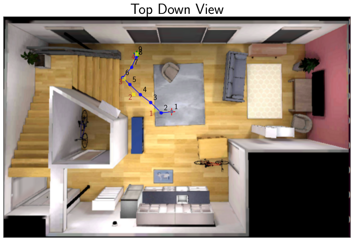
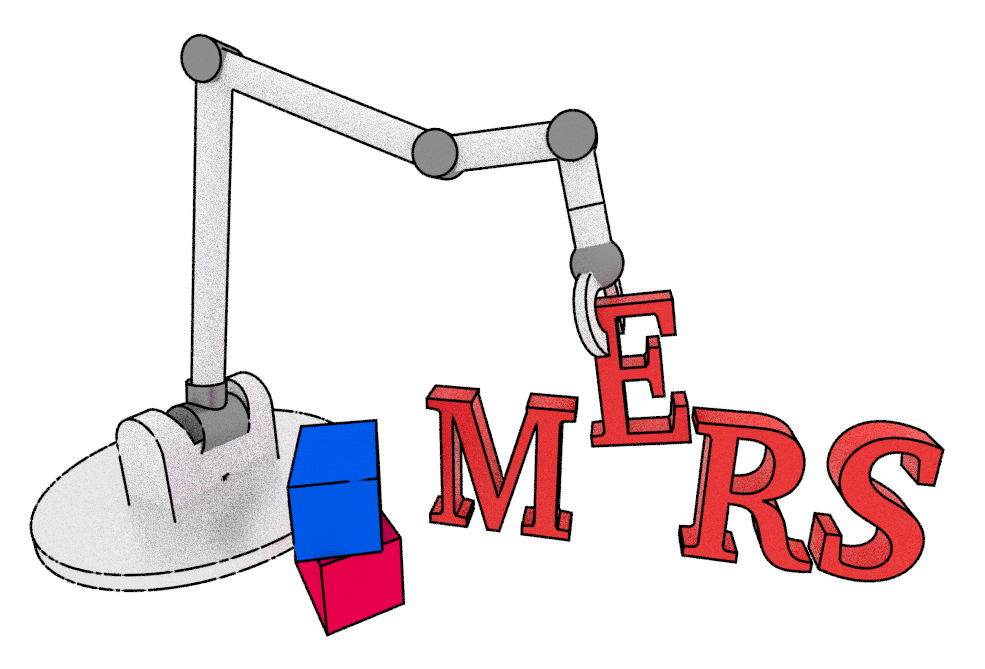
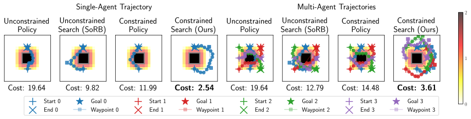
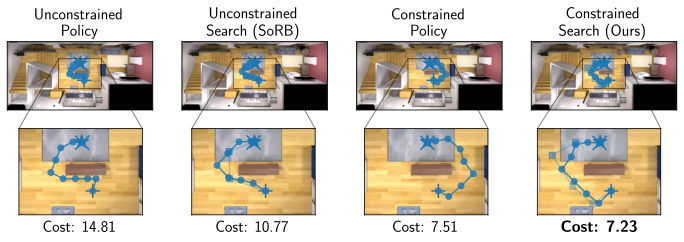
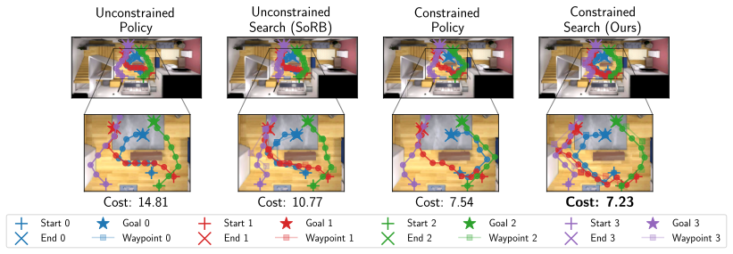
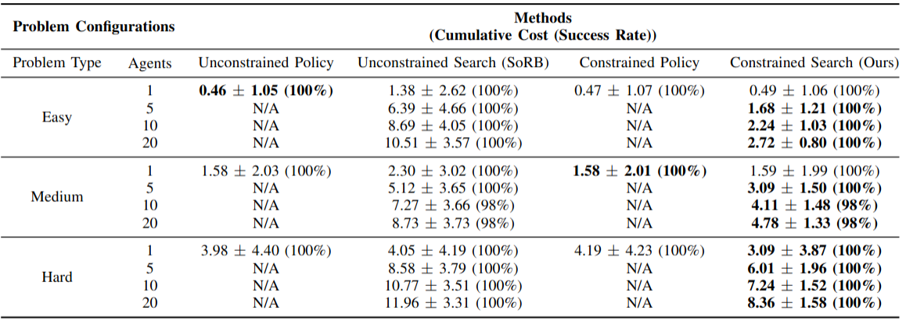
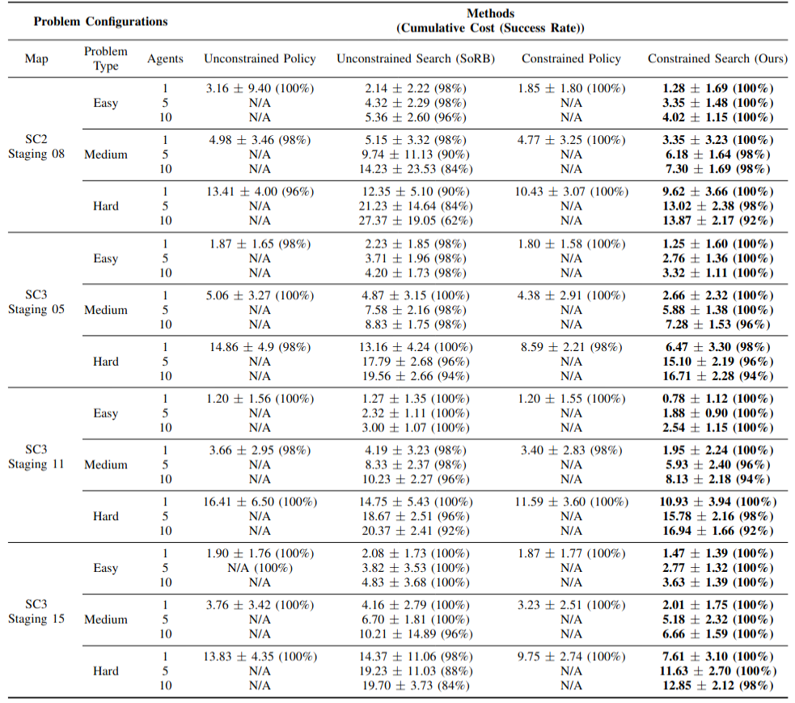

High-Level Overview of the Visual Navigation Approach



Safe navigation is essential for autonomous systems operating in hazardous environments. Traditional planning methods are effective for solving long-horizon tasks but depend on the availability of a graph representation with predefined distance metrics. In contrast, safe Reinforcement Learning (RL) is capable of learning complex behaviors without relying on manual heuristics but fails to solve long-horizon tasks, particularly in goal-conditioned and multi-agent scenarios. In this paper, we introduce a novel method that integrates the strengths of both planning and safe RL. Our method leverages goal-conditioned RL and safe RL to learn a goal-conditioned policy for navigation while concurrently estimating cumulative distance and safety levels using learned value functions via an automated self-training algorithm. By constructing a graph with states from the replay buffer, our method prunes unsafe edges and generates a waypoint-based plan that the agent then executes by following those waypoints sequentially until their goal locations are reached. This graph pruning and planning approach via the learned value functions allows our approach to flexibly balance the trade-off between faster and safer routes especially over extended horizons. Utilizing this unified high-level graph and a shared low-level goal-conditioned safe RL policy, we extend this approach to address the multi-agent safe navigation problem. In particular, we leverage Conflict-Based Search (CBS) to create waypoint-based plans for multiple agents allowing for their safe navigation over extended horizons. This integration enhances the scalability of goal-conditioned safe RL in multi-agent scenarios, enabling efficient coordination among agents. Extensive benchmarking against state-of-the-art baselines demonstrates the effectiveness of our method in achieving distance goals safely for multiple agents in complex and hazardous environments.





@misc{feng2025safemultiagentnavigationguided,
title={Safe Multi-Agent Navigation guided by Goal-Conditioned Safe Reinforcement Learning},
author={Meng Feng and Viraj Parimi and Brian Williams},
year={2025},
eprint={2502.17813},
archivePrefix={arXiv},
primaryClass={cs.RO},
url={https://arxiv.org/abs/2502.17813},
}